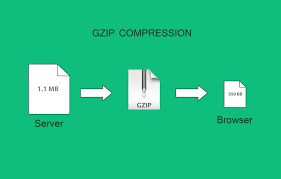
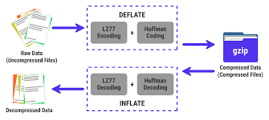
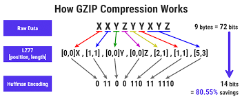

This is some sample text for demonstration purposes.
Gzip, which stands for GNU zip, is a file compression and decompression tool and format commonly used in Unix and Linux environments. It is also used in web servers and browsers to compress web content, such as HTML, CSS, JavaScript, and other text-based files, to reduce data transfer times and improve website performance. Here are some key points about Gzip compression: Compression Algorithm: Gzip uses the DEFLATE compression algorithm, which combines the LZ77 algorithm for string matching and Huffman coding for symbol encoding. This results in efficient compression of data. File Format: Gzip typically compresses single files or streams of data. It appends a ".gz" file extension to compressed files, making it easy to identify them.
Command-Line Tool: Gzip can be used as a command-line tool in Unix and Linux systems. You can compress files using the gzip command and decompress them using the gunzip command. To compress a file: gzip filename To decompress a file: gunzip filename.gz HTTP Compression: Gzip compression is widely used in web servers and browsers to reduce the size of web content before sending it over the network. When a web server supports Gzip compression, it can send Gzipped content to the browser. The browser then decompresses the content and renders it.
Encoding Header: In the context of web servers and browsers, Gzip compression is indicated in the HTTP request and response headers. The "Content-Encoding" header field is used to specify that the content is compressed with Gzip. This reduces the amount of data transferred over the internet, making websites load faster. Efficiency: Gzip is especially effective for compressing text-based files, such as HTML, XML, CSS, JavaScript, and JSON. It may not be as efficient for already compressed files (e.g., multimedia files like images, videos, or already compressed archives like ZIP or tar.gz files).
Overall, Gzip compression is a widely used and effective method for reducing file sizes, which is beneficial for data transfer efficiency, storage, and web performance optimization.